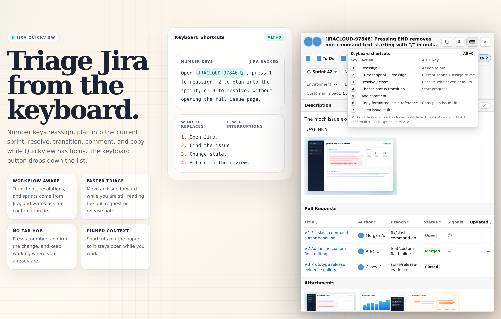
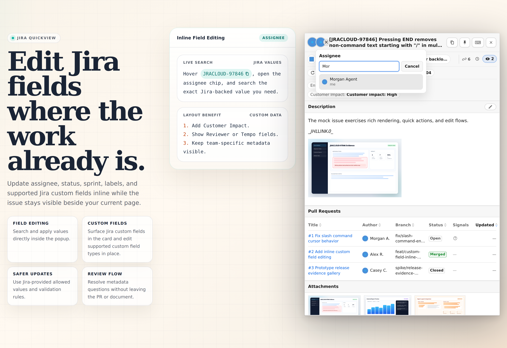
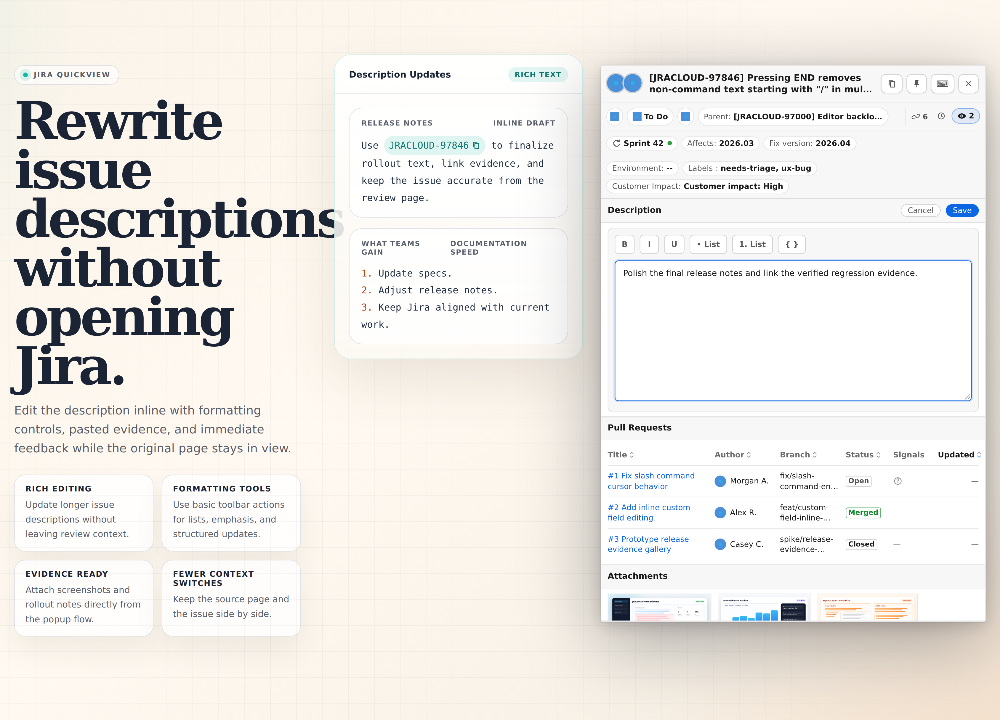
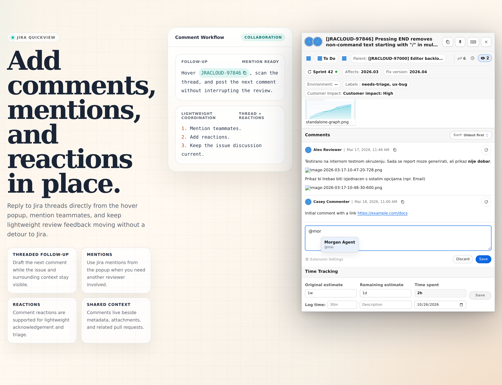
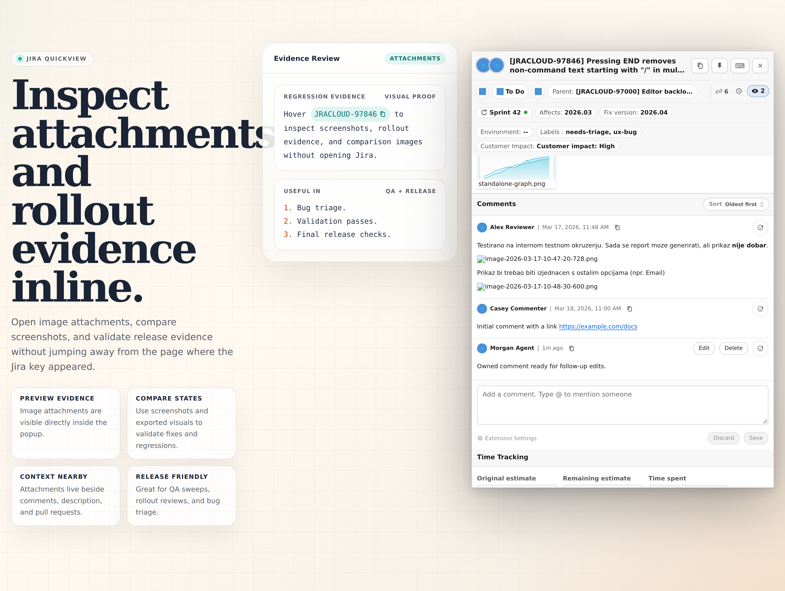
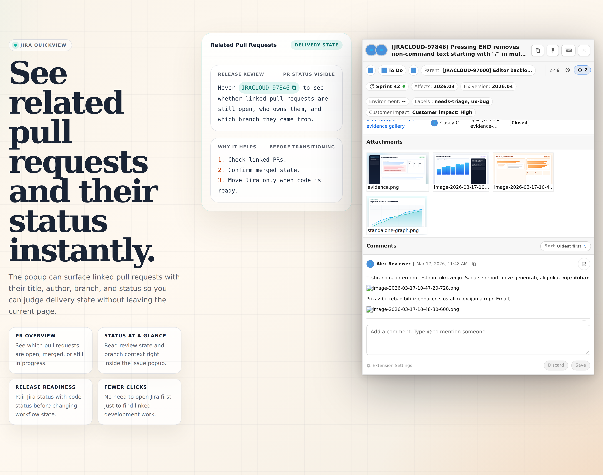
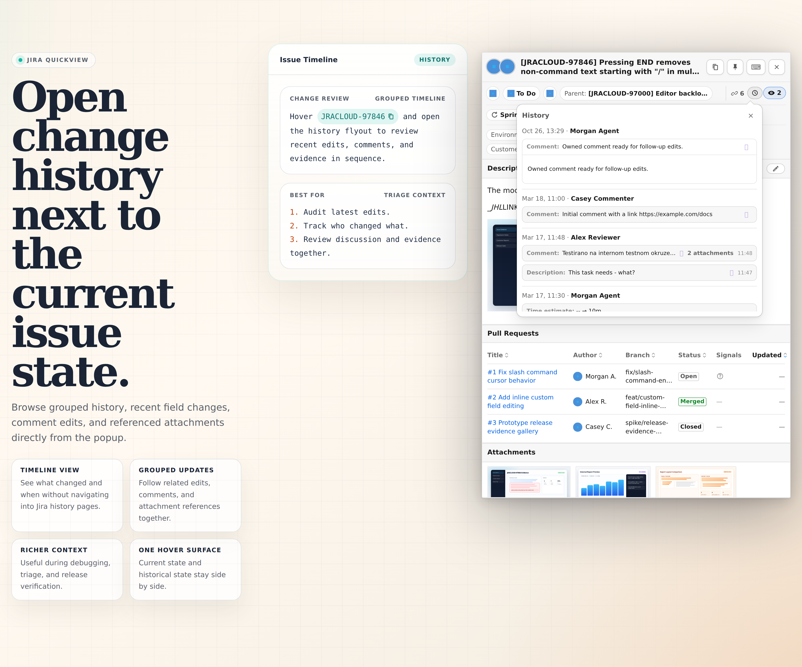
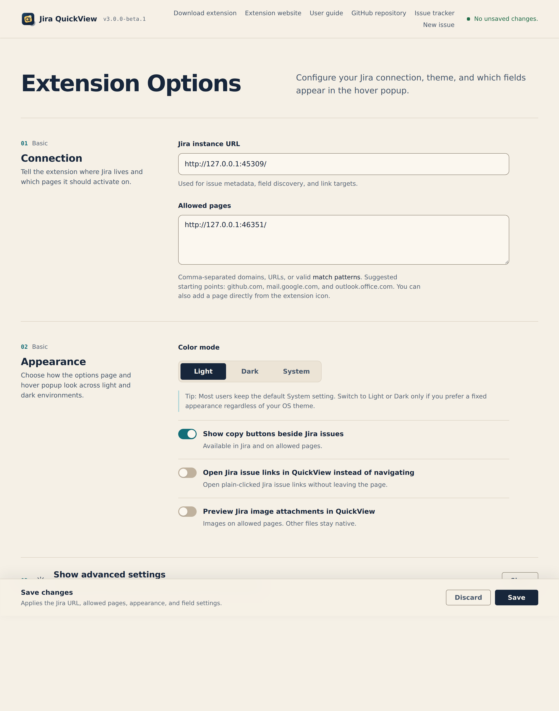
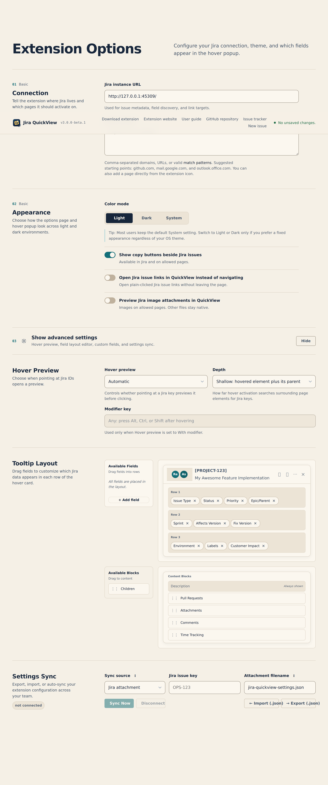
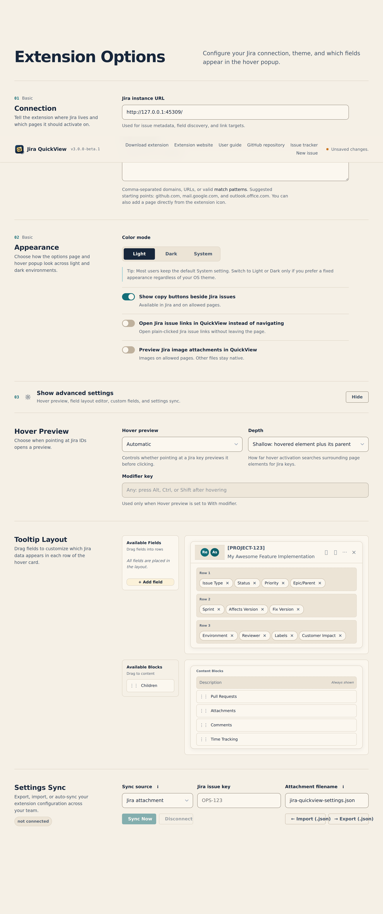

One gesture, much more context
Open a Jira notification email in Gmail or Outlook, click the issue link, and triage the ticket directly from your inbox. The same workflow applies on GitHub pull requests, release notes, docs, bug lists, and other enabled pages: inspect the issue, review linked PRs, add comments, transition status, and update fields without breaking context.
Feature highlights
- Action Jira email notifications directly from Gmail, Outlook, and other enabled inbox-style pages
- Rich popup for issue metadata, linked Jira issues, description, attachments, comments, and linked pull requests
- Children, linked issues, and external links in one panel, with key/summary search, multi-key entry, status and assignee context, and confirmed removal
- Compact linked PR grid with titles, authors, source → target branches, sortable last-update details, and optional GitLab approval, review, CI, and conflict signals
- Opt-in Jira image attachment previews from links on allowed pages, including Gmail and Outlook redirect wrappers
- Inline editing for supported Jira fields and supported custom field types
- Configurable layout with Jira custom fields placed directly into the popup rows
- Comment drafting with mentions and support for comment reactions
- Number shortcuts for assignment, sprint planning, resolve/close, status, comments, and copying, with a shortcut list under the keyboard button
- Copy rich issue links beside Jira references in Jira and on allowed pages
What's new in 3.0
- Preview Jira image attachment links without leaving allowed pages. Enable Options → Appearance → Preview Jira image attachments in QuickView; it is off by default. Non-images and failed previews fall back to Jira.
- Use number shortcuts while QuickView has focus: assignment, sprint planning, resolve/close, status, comments, copying, and opening Jira. The keyboard button (or Alt+0) drops down the shortcut list. Sprint/assignment and resolve flows require confirmation before writing. The Quick actions menu is gone; its actions are on the shortcuts.
- Review linked pull requests by title, short author name, and source → target branch, with last-update sorting and details. GitLab enrichment uses your existing signed-in session and requires site access; unavailable signals remain unknown rather than showing success.
- A roomier header: the title and assignee pencils overlay the text, and editing the title keeps the header's height.
- Compact field chips: icon-only issue type and priority, a sprint icon with an active/future dot, avatar and short name for user fields, and long values that ellipsize with the full text in one consistent tooltip style.
- Any field can sit in any row of the layout editor, in the order you place it, and empty rows leave no gap.
- Configure the extension in redesigned light/dark Options, and browse refreshed documentation with keyboard-accessible screenshot viewing.
What's new in 2.9.2
- The links panel shows children (sub-tasks and epic children), linked issues, and external links in three sections; the count on the link button includes all three
- External links, such as test cases or Confluence pages, open in a new tab and can be removed from the panel
View in Jirain the panel header, andView allsearches for children and linked issues- Long issue titles in the popup header stop at two lines
Fixed in 2.9.1
- Clicking an issue key on a Jira board card, or the key at the top of an issue or of the board's detail panel, opens QuickView instead of navigating; Jira's own tab and action links keep working
- Copy icons no longer appear beside the Cancel link in Jira dialogs
- The popup has a single 1px frame with a soft shadow on every side, and the title editor keeps its compact padding
What's new in 2.9.0
- A calmer popup: neutral greys with one Jira-blue accent, sentence-case headings, flat buttons, and section headings that stand apart from issue content
- Field chips size to their text, with grey labels and semibold values, so rows wrap less and values are easier to scan
- Dropdowns show the row under the pointer in grey and the selected value in blue, so the two never look alike
- QuickView takes keyboard focus when it opens, so
Escapecloses the popup instead of reaching the page behind it (for example, Outlook's reading pane) - Popup-scoped number shortcuts speed up assignment, sprint planning, resolution, comments, and copying;
Alt+0shows the list. Sprint + reassignment is staged together, and resolution always asks for confirmation. - Clicking outside an unchanged field editor closes it; Fix Version and Affects Version list only your Jira versions, without a separate "N/A" entry
- Copy icons no longer multiply after the extension is updated or reloaded, and the Unassigned option no longer shows the current assignee's avatar
Why it matters
- Turns Jira notification emails into actionable workflows instead of another tab-switching detour
- Less tab switching during review and triage
- Faster issue updates while staying in the current page
- Better release confidence with linked issues, attachments, history, and linked PRs in one place
- More relevant popups because each team can control fields and custom field placement
Quick start
- Open Download Extension in the Chrome Web Store.
- Click
Add to Chromeand confirm the browser prompt. - Open the Jira QuickView Options page.
- Enter your Jira instance URL, for example
https://your-company.atlassian.net. - Add the pages where Jira QuickView should run, such as
github.com,mail.google.com, oroutlook.office.com. - Save, open an allowed page, and click a Jira issue link such as
ABC-123.
By default, a plain left click on a Jira issue link opens and pins QuickView instead of navigating, while hovering previews Jira IDs that are not links. Middle-click and modifier-click retain normal browser behavior. Hover preview can be disabled or require a modifier in Advanced settings.
For full setup details, advanced allowed-page patterns, desktop-app/PWA setup notes, custom fields, troubleshooting, and day-to-day workflows, read the User guide.
Where it works
Jira QuickView works on pages you explicitly allow, including GitHub, Gmail, Outlook on the web, internal docs, wiki pages, dashboards, release notes, and QA checklists. It can add copy actions beside recognized Jira references on those pages and across supported Jira Cloud or Jira Data Center views. It does not scan every site you visit.
Customize the popup
The Options page lets you choose color mode, click and hover activation, row fields, content blocks, custom Jira fields, and import/export settings. The User guide explains each configuration block and the Jira permission or workflow limits behind edit controls.
Privacy
- Uses your existing Jira browser session and, with granted site access, your GitLab session for optional read-only PR details
- Stores no separate Jira password
- Sends requests from the browser to your Jira instance
- Honors Jira permissions, validation rules, and workflow restrictions
- Privacy Policy
Need help?
- Read the User guide for setup, advanced configuration, troubleshooting, and daily workflows.
- Use the Issue tracker to report bugs or request improvements.
Gallery
| Keyboard shortcuts | Inline editing |
|---|---|
 |
 |
| Description editing | Comment drafting |
|---|---|
 |
 |
| Attachments and evidence | Related pull requests |
|---|---|
 |
 |
| Change history | Options overview |
|---|---|
 |
 |
| Advanced layout | Custom fields |
|---|---|
 |
 |
License
MIT. See LICENSE.md.